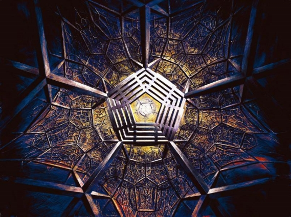

Ex Machina (Part 1)
by
Brett Davidson
The sky itself was dying. There was one less star to be counted, and thus the call came to strive ever harder against our opponents. Our legion, Abiding, ranked facing the eternal wind and before the unmoving Sun. We cast our shadows before like spears.
And before us, the end of the latest tide of organised opposition to our dominion. The enemy called themselves “the people”, or at least that is what the word they used for themselves meant to them. To us, it was as it always was: outsider, threat, enemy, not-yet-vanquished.
They had established a peculiar symbiosis with their chattel animals, I had heard, and now I saw them mounted on these beasts first hand for the last time. They were odd creatures, strangely distorted and yet also strangely elegant variations of the human prototype. Like true people, they had four limbs arranged in pairs at either ends of compact torsos, heads bearing ears and eyes of intelligent intensity atop streaming-maned necks. Strangely, they ran not on feet, but four sturdy-nailed fingers. The name they gave them, I believe, was “horse.”
I must admit that individually, a horse was a beautiful thing, and with a rider upon its back, the pairing was in no way grotesque. It was, indeed, bold, and in action their synthesis was both powerful and elegant.
Militarily, however, they could be no match to our own powered frames that had no mediating intelligence to guess and mistake our intentions. I raised my arm in a preparatory signal, and reading directly the impulses of my nerves, my frame amplified the gesture as naturally as my own flesh.
In instants such as this, the greater the tension, the longer time is attenuated, but it ended and we charged and they charged and we came to the clash. There was no time for contemplation, but now, after, I have time and so I do insert a moment that traverses many years.
You do not know my name; one way or the other it has been erased – by time or more deliberate censorship. Allow me then to introduce myself: as you see, in that artificially stalled moment with my arm raised, I am at the head of a great legion; my rank is Agetor; my clan, Indikos; my city is no city but the one Great House of the Twilit Land – and my name, that is Chryseo Drakonhaema Phylindikos.
Perhaps you have heard of me; as recollections of the aged under the Lights, in curses or whispers in the halls of the Great House. Perhaps there has been another Adjustment in that place and I am rehabilitated, my deeper loyalty seen for what it is or was.
Returning to the field under the halted Sun, we are outside that moment of anticipation and well into the act. The nails of the horses pound the earth as if it were a drum and raise a cloud of dust that rises above the army like an array of banners. We hear the riders howl.
We ourselves are silent, disciplined, sharpened and buffered by synthetic hormones and enzymes in our blood. My earpieces relay a theme designed to manage my heartbeat at the optimal tempo and a melody to keep my moves in step with the order of our tactics. Every step is efficient and accurate and I feel something akin to rapture as I perform my bloody dance. Looking from above, as indeed our recording instruments do, you might see something like a reaction between two volatile fluids. Theirs is effervescent, unstable, surging like a wave, thick foam of anger breaking at its lead. Now look at us: something like oil in our smooth density, something like smoke the way we coil and eddy. A red mist rises from the reaction.
There is of course something artificial about this battle. We have at our disposal flying machines of many kinds, a mere few of which could butcher our opponents safely from heights they could never reach. Likewise one Kastchei-class manshonyagger could wade through them and quickly dispatch the lot with dispassionate precision. That though would not serve our longer purpose; if we stood too far above them, then they could convince themselves that they fought demons and that rightly then they should continue as the struggles against demons is proper to being-in-action. That could not be permitted. They had to see our faces and know that they were defeated by true men and thus we showed our faces and our hands to them, even enframed in metal.
And of course we saw their faces and refused to notice that we could not see any difference from ourselves in them.
The horses, though… They were different, and aroused in me peculiar emotions. Their long, bony and soft-lipped faces could not be read as naturally as a person’s, but I saw in their wide eyes, in the specks of foam flying from the bits of their bridles real rage and real terror. The reactions of lesser beasts and mechanical devices are only reactions, no more, but an intelligent creature could and must have such emotions, for they are engendered by knowledge of pain and mortality and love and loyalty.
It was not right to erase from this already famished world such beauty, but sentiment was cast as a weakness in the Great House and there could therefore be no riders, no horses ever again. If we admired them, then it was because they were powerful, and if they were powerful they were a threat. I knew a little of their diet and requirements; they were creatures of open plains and the Great House could not contain them. They could only remain outside and that was intolerable to our masters. I think perhaps that jealousy was hidden in their motives.
And as for myself, perhaps I could not bear to see such a thing corrupted either by enslavement by the abhumans I knew would master the Valley in the end and neither could I bear to see them constrained in the black metal halls of the House.
I did not think too long on that last point. Sentiment, I said, is a weakness, and worse than that, it is hypocrisy. I would not permit myself to weep as they died, as I killed them.
Within a septaphase, we were back within the environs of the Great House again. It was a great five-pointed plateau of black metal a league high and twice as broad, set within an aureole of labyrinthine earthworks. Seemingly inviolable, it was as regular and perfect as a machine, a huge calculating mill, counting time, measuring and slicing the years… and lives. And I served that apparatus, I was part of it, interlinked with all my comrades and all our machines. An imperfect part.
I did not fit; none of us did. It was making us fit, shaping us as it shaped its plans, and I did not wish that.
As was customary, a manshonyagger dropped from the arch of the gate and bobbed in a challenge to us.
“Hail, I am Kastchei Three. Identify!” it demanded. “Certify readiness for contagion test, certify readiness for decontamination!” As we had so often before, we offered our striated badges to the sweeping lasers and five faces of the machine and so were admitted. It saw what it desired to see, what we desired it to see — but that was not all that there was to see. Seditiously hidden behind the conventional crest of my division on my silver gorget, there was a cameo gem carved with an emblem of Astrarchê Io. When I was sure of my privacy, I would take it out and look at it, wondering. The gem had been a gift from my father and I did not entirely understand it. The paradoxically slight figure depicted there radiated strength and power as she held upright the strange disc-shaped weapon that legend said had been given to her by two mysterious travellers, one in wine-rich purple and the other in grey shot with fire, as a tangible proof of the greater civilisation to come. Surrounding her, like a mechanical halo, there was one of the ancient sky-castles, I knew; indeed, our own Great House mimicked in static form some of the aspects of its design. Under her feet, completing the picture, things like crinoids and dark lightning cringed and withered.
Like all legends, hers was filled with details like the sky-castle and the colours of the travellers’ garments that gave its essentially fantastic substance the form of a true account.
The twinges of dread inspired by the very illegality of the icon and my love for it doubtlessly supported each other, producing a rich, sinfully virtuous flush of devotion in me. When the manshonyagger squatted before us and scanned our tags with fans of ruby light, I smiled a smile its own algorithms would only be able to interpret as conventional arrogance. It would not see the spite I hid in plain sight there, and when it let us pass, I smiled all the more – but then my glee dissolved into a broth of more complex feelings.
Within the mighty walls once more, I looked up and saw the great piers encircled with the climbing modular spirals of the clan domiciles, all ordered according to the meaning of their badges in the vast mnemonic system that ordered our society. Proper, it was said, not proper I whispered to myself, because hung between those piers, I saw also the hanging catenoids of the weblines the smaller Mantis-class manshonyaggers wove so that they might peer within every window and examine those they thought nonconforming. Those machines made excellent guards. Too excellent perhaps in their inscrutability. We had not made them – that had been done by our ancestors aeons before – but we had adopted them or they had adopted us upon the Foundation of the House. Who though could have said that he truly knew the manshonyaggers? We used them because it was convenient to do so – and because we could not kill them. But what was their gain in this arrangement, what was their interest? We knew that they had been made aeons ago with the simple commandment embedded in their minds to protect true humanity, but so fine and diverse were the definitions in the Twilit Land, could we be sure that they would not decide one day that we had drifted too far from their programmed ideal and then turn upon us?
Who knew indeed…
After quarantine and decontamination in both ritual and mundane forms and the preliminary deposition of our reports, we were released before the final collation and enquiry to return to the care of our families. It had been too long, as ever, and I walked with an unseemly haste from the barbican complex to the dormitory stacks.
As I passed through one of the major circulation nodes I came as ever upon one of the great multiply-faced clocks that stand at each major intersection and which in miniature regulates every household. As ever it lied, because its faces were circular. Time, we know, most assuredly does not move in circles, though scholars tell us that this is what the ancients believed when the earth itself turned and produced fruits in cycles and before the catastrophe occurred. Now the Darkening is upon us and the Sun stands still in the West and the only proper shape for a dial would have to be some other geometry – perhaps a series of bars of escalating magnitudes so that as each one declined to zero, the one adjacent reduced by one increment and so on.
The masters of this House do not like to see pessimism made so manifest, however, so they continue to lie to us with circles that turn and turn and turn.
My beloved Argyra, named Argyra Akmehaema Philindikos and mother to our twin daughters Aletheia and Schea waited for me and as ever, and as ever, we saluted the shade of my father, Drakon, at the ancestral shrine, giving thanks for my victor that was so much in imitation of his own triumphs, as ever we went to the bedchamber…
As ever, as ever. The things that repeated in the manners of our community were tyrannical, the things that repeated by my hearth were the reflections of a sturdy love that would endure all tyranny.
We embraced, my uniform unfastened fell in parts as we staggered to our bed, and there we renewed the eternal ecstasy that strips our souls naked of its cloak of words as desire does our bodies. I forgot the risk, I forgot the fear and bravado and the hidden desire I might have to be found out so that I might shout my defiance to all who I blamed. I forgot time itself.
You must understand this: passion in youth is the sign of imagined desire and uncomprehended potential. In maturity, in love, it is proof of everything.
As I penetrated her and began the pulsing flow that led with delicious inevitability towards the consummation of this most intimate of sagas, I thought of the horses, of the galloping flow of beast and master charging in massed formation across the plain. There was, I realised, no such division; both determined the gait of the one beast that was made of two. I was not her master nor she my rider; we are as we act and we acted as one.
I slept contentedly that cycle, until the clocks decreed a new phase and the call came for the presentation of the final report on the late battle before the Central Assembly of the Heliomancers.
The preparation of a post-expeditionary report was always a complicated and tedious process, requiring several cycles of processing through a licensed analytical mill to wring out the appropriate statistical data from the annotations to my narrative log and reconcile that with the data from the flying kybergnostic recorders. I always disliked this task and could never emotionally connect what I wrote with what I had experienced. Nonetheless, I was always diligent about the details because I knew that the masters of the Great House planned for the long term and depended on accurate knowledge of trends as much as they did on dramatic novelties. Not everything declined with the Sun; some of our potential enemies flourished in shadows. As the strategists in the College of Actuarial Arts said, “If it lives, it may thrive; if it thrives, it will be a rival; if it is a rival, it is our enemy.” That equation might describe and armed horde, the lowliest weeds and land corals or something so vast and slow as to be invisible to us and only perceived in the longest, most detailed records – hence our meticulous measurement and record-keeping.
When the report was complete at last, I made my way to the offices of the Keep Annexe. The seneschal there was a new fellow, his predecessor having been relieved due to some unmentioned indiscretion. I had always found that man agreeable, but whatever my feelings, I did not dare to call attention to myself by enquiring as to his exact sin. The new man was a much cooler individual, and that in a sense made my own privacy easier as I had no obligation to initiate conversation with him.
The council itself had succeeded in emulation an analytical mill, placing itself above the merely personal in their aim to discern the purely objective. Each was masked and their bodies were hidden under bulky cloth of gold robes, all the better to suppress the assumption of bias and favour. They were even selected for their positions through an elaborate system of double blinds and never met out of costume so that no one of them knew or could recognise another. One I knew to be the Archagetor of the Legions, but even he I had never seen unmasked. It was even possible that one was a member of my own family – not that I would ever know.
One other of them was the Prime Adjustor and I was glad that his face and location were unknown to me because I could never allow to be seen the fact that I had reason to fear him.
Elevated as the Assembly was on a tall dais, as individuals they were dwarfed beneath the Grand Analytical Mills that loomed still higher. Waves of movement passed along their cam stacks, making them appear as if there was an endless trickle of fluid metal running both up and down their flanks. So finely engineered were they that the grinding of lesser instruments was absent and they emitted little more than a soothing purr.
The individual members of the Assembly did not speak to me, nor even to each other. Instead each presented questions and orders through a keyboard that drove the pipes and valves of an enamelled brass head that was mounted on a podium before them. It was to this effigy that I in turn answered, politely maintaining the pretence that I could not even see the shrouded figures manipulating it.
I was always nervous under such examination; while I may have some dubious skill in words, I am sure that my ability with numbers is extremely limited and I was certain that some flaw in my handling of the mill had let in some greater error.
Perhaps it was my general guilt over my concealed heresy seeking some outlet. Perhaps also I was simply a patriot, caring for my people. However much I might lack the faith of the worshippers of the dying god, I could not look at my family, my clan and my comrades with a similar lack of sympathy. Their safety and that of all their descendents depended in part at least on my accuracy.
In any case, the Brass Head expressed no doubt, instructing me in its wheezing but musical voice to return to confirm the readiness of my legion and receive my brief for the next expedition in two dekaphae.
It was then that the expedition was officially at an end and I was released at last to return to my family without interruption.
You must understand that I did not hate the Assembly. They were good men, they meant well with a desperation and bravery that did credit and made example for us all. The Sun was dying, as they knew, and the abhumans who had adapted too well to the dimmed and corrupted Twilit Land gained on us each year. Looking into their eyes I was tempted every time to declare my hidden allegiance.
But of course I never did.
My meeting with the Ariphrôn, the Master Monstruwacan, was partly constitutional and partly personal. Over my kilophae as an Agetor I was required to negotiate the delicate intermeshing gears and balances of the Great House’s governing system, but my mandated consultations with the man had quickly become a matter of friendship and then, in what I think was a fine way, he had corrupted me.
I had been impressionable when I first met him, a young man lately promoted and enchanted by illustrations of Astrarchê Io. There she was in his books, the empurpled Queen of Stars with her red hair like a banner in the light of the Sun, under the tenscore red stars of the darkened sky, whirling her electric fire-rimmed diskos about and leading us on into the promised True History of the World. She was long dead of course, her body buried under a gilded obelisk at the Uttermost Precipice before the Gate of the Road of the Great Descent. Why should I care for mere dust now? Legend said that she was to reborn again and again when the times demanded as an eternal champion and… then I found Argyra – but the old Monstruwacan’s teachings remained with me.
Istôr, a senior candidate of the Monstruwacan order and Ariphrôn’s staff of age, met me at the door and conducted me to the Master’s study where I found him dressed formally in purple and relaxed informally in his favourite chair. A samovar steamed on a table beside him and he indicated that I should serve myself. I did and sat down facing him; my filecase was unopened and he seemed not to be interested in it.
We had little to discuss regarding my recent expedition, other than to shake our heads sorrowfully over the probable extinction of the horses. In the long run, and there could only be the long run in our regard, extinction was inevitable and in fact we must ensure as many more as possible once a threat to the survival of true humanity is identified. The horses were useless to us, but a benefit to those who might challenge us for mastery of the Land and thus their extermination was necessary – but, oh, they had been beautiful!
“There are worse things you will face soon,” he warned, intimating the following topic of conversation.
“I will, gladly,” I replied, misunderstanding him. “I will be happy to destroy unambiguously evil things.”
He leaned forward. “Will you? Will they be unambiguous?”
“I would wish that they were,” I hedged.
“Ah.” He smiled. Another lesson had been delivered. He left it to me to consider the implications of both the questions and my answer.
He was silent for a while before he prodded me again. “Tell me,” he said quietly, “did you notice anything unusual about the Land on your expedition?”
My answer was wry, as I knew that he was laying another trap for me. “I noticed many unusual things about the Land both before and after the battle, but most related to that event and tended to absorb all of my attention. A few extra oddities, including the one that was most significant unfortunately escaped my notice.”
He gave a quirked smile and sighed. “Of course. Well then, of course you missed the most important novelty, or the lesser of the two.”
“Two? Is one the missing star?”
“The extinguished star, the omen that made a demonstration of our vitality imperative is one, yes. There is also another, one that is also rather ironic: another light has been lit.”
Another light. That could only mean one thing. Far in the northeast there is a realm called the Black Hills on account of their dark basaltic composition. It is dangerous and only schematically explored, being prone to frequent volcanic eruptions and floods of lava. The land there is too fresh and changeable for any of our maps to have currency. That in itself is disturbing, but beyond the Black Hills there is something we dread all the more because of what may cross the Hills when at last they cool. Standing over them, clearly visible to a good eye and a spyglass there is a coronet of eight pale lights. We do not know what lit them or lives under them and do not want to know – but it is imperative that we must. Periodically an aerial reconnaissance is sent, but none have ever returned and pressure had been growing in recent kilophae to send a surface expedition. Now that the Eight Lights were Nine Lights, that expedition was guaranteed.
As an Expediter, I felt an instinctive thrill at the prospect of adventure and glory – and of course, dread too, if not for my own life but for the bereavement of my family should I die.
Ariphrôn had no living family, but he had his own mixture of feelings. “One star less; one light more,” he murmured, partly to himself. “I hardly know which is the more significant and fear most neither, but our reaction to these events.”
I cocked my head at this. He looked me in the eye. His stare was hard, without any of the gentle humour that had been there only moments ago. “You know of the historic tensions between the Gold and the Purple, the conflicting creeds of the dying red sun and the unseen green. You know perhaps too well of them as your background because they are your background and distant at that when you are at your best – Out in the Twilit Land. I cannot leave this House, I see these coiled springs winding themselves ever tighter and I know that a clock overwound will break. That point is near now. The Heliomancers and the Monstruwacans both know it and an event as momentous as this could be the prime instigation.” Under the constitutional arrangement of the Great House, it was the Heliomancers to whom I gave my oath and from whom I took my orders. In the event of such a crisis as he implied, Ariphrôn would be my enemy, and not at all unambiguously evil. “There will be an Adjustment,” he whispered. “Soon. Be prepared.” We said no more of consequence. As Istôr ushered me out, I noticed that I had my filecase under my arm, still unopened.
Image and story © 2013 by Brett Davidson.